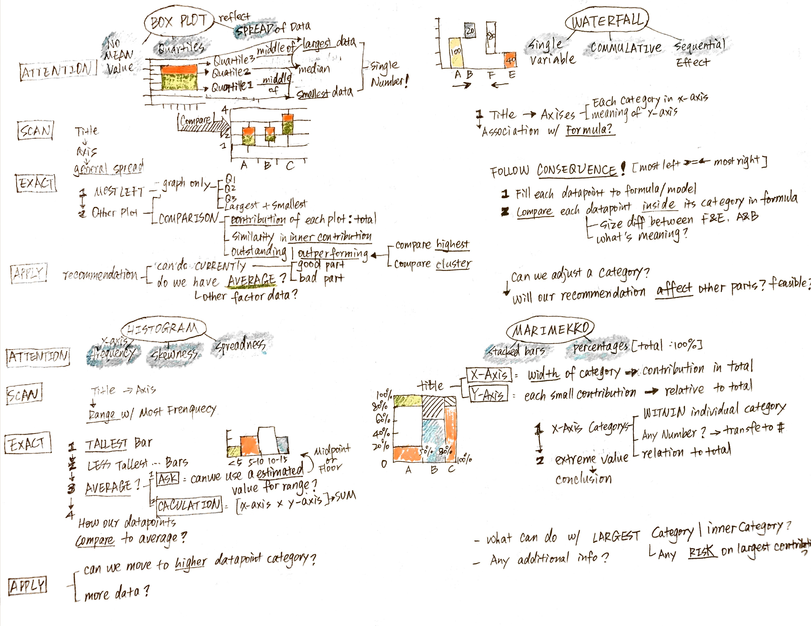

2018-08-29 Pengyin(Wendy) Shan Reading Notes Previous post Next post Chapter 2 of Case in Point: Graph Analysis for Consulting and Case Interviews, written by Marc P. Cosentino Mukund Jain Steps LINE, BAR, PIE AREA, SCATTER, BUBBLE, REDAR BOX, WATERFALL, HISTOGRAM, MARIMEKKO Steps SCAN EXTRACT APPLY LINE, BAR, PIE AREA, SCATTER, BUBBLE, REDAR BOX, WATERFALL, HISTOGRAM, MARIMEKKO  Tweet Comments Please enable JavaScript to view the comments powered by Disqus. Comments powered by Disqus


Comments
Comments powered by Disqus